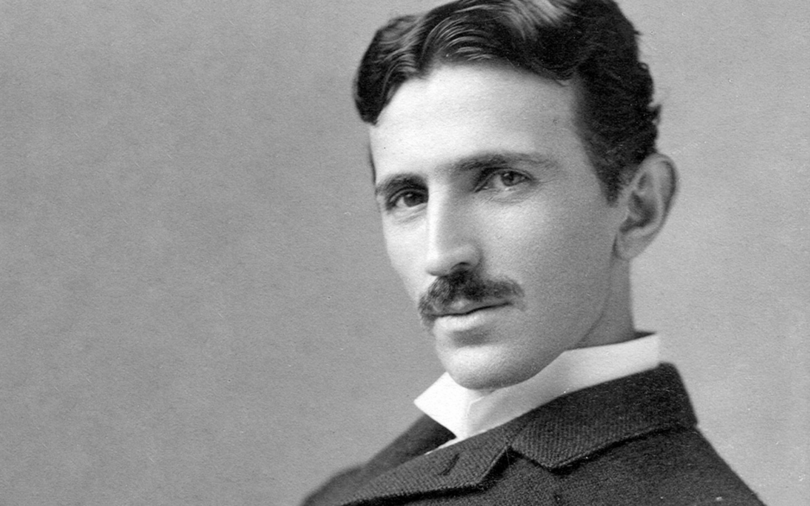

Born on July 10, 1856, Nikola Tesla was a Serbian-American most famously known for his contributions
to the design of the modern alternating current electricity system
Born on
10.07.1856
In
1861, Tesla attended primary school in Smiljan where he studied German, arithmetic, and religion.
In
1862>, the Tesla family moved to the nearby Gospić, Lika where Tesla's father worked as parish
priest. Nikola completed primary school, followed by middle school
In
1870, Tesla moved far north to Karlovac[25] to attend high school at the Higher Real Gymnasium.
The classes were held in German, as it was a school within the Austro-Hungarian Military Frontier. He
finished a four-year term in three years, graduating in 1873
In
1873, Tesla returned to Smiljan. Shortly after he arrived, he contracted cholera, was bedridden
for nine months and was near death multiple times. Tesla's father, in a moment of despair, (who had originally
wanted him to enter the priesthood)promised to send him to the best engineering school if he recovered
from the illness.
In
1881, Tesla moved to Budapest, Hungary, to work under Tivadar Puskás at a telegraph company,
the Budapest Telephone Exchange. Upon arrival, Tesla realized that the company, then under construction,
was not functional, so he worked as a draftsman in the Central Telegraph Office instead. Within a few
months, the Budapest Telephone Exchange became functional, and Tesla was allocated the chief electrician
position.
in
1882, Tivadar Puskás got Tesla another job in Paris with the Continental Edison Company.[38]
Tesla began working in what was then a brand new industry, installing indoor incandescent lighting citywide
in the form of an electric power utility
In
1884, Edison manager Charles Batchelor, who had been overseeing the Paris installation, was
brought back to the US to manage the Edison Machine Works, a manufacturing division situated in New York
City, and asked that Tesla be brought to the US as well.
4 January 1885 Tesla leaves Edison
In
1887>, Tesla developed an induction motor that ran on alternating current (AC)
On
30 July 1891, aged 35, Tesla became a naturalized citizen of the United States. In the same
year, he patented his Tesla coil.
In
1895, Edward Dean Adams, impressed with what he saw when he toured Tesla's lab, agreed to help
found the Nikola Tesla Company, set up to fund, develop, and market a variety of previous Tesla patents
and inventions as well as new ones. Alfred Brown signed on, bringing along patents developed under Peck
and Brown. The board was filled out with William Birch Rankine and Charles F. Coaney.[116] It found few
investors; the mid-1890s was a tough time financially, and the wireless lighting and oscillators patents
it was set up to market never panned out. The company would handle Tesla's patents for decades to come.
On
7 January 1943, at the age of 86, Tesla died alone in Room 3327 of the New Yorker Hotel. His
body was later found by maid Alice Monaghan after she had entered Tesla's room, ignoring the "do not
disturb" sign that Tesla had placed on his door two days earlier. Assistant medical examiner H.W. Wembley
examined the body and ruled that the cause of death had been coronary thrombosis.
If you have time, you should read more about this incredible human being on his
Wikipedia entry.